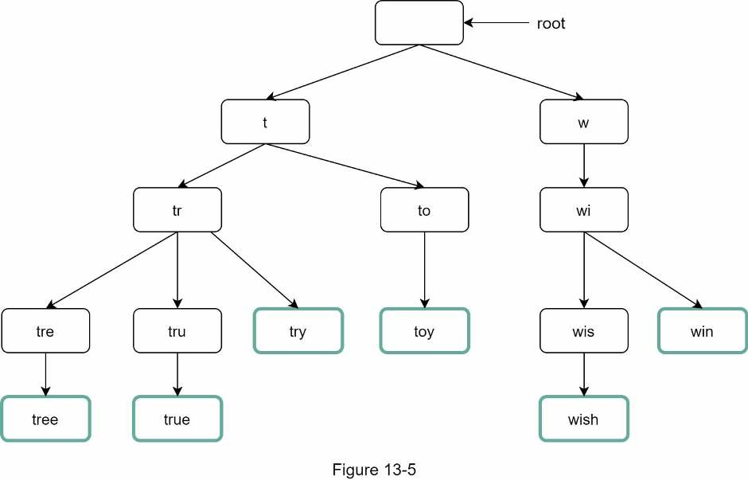
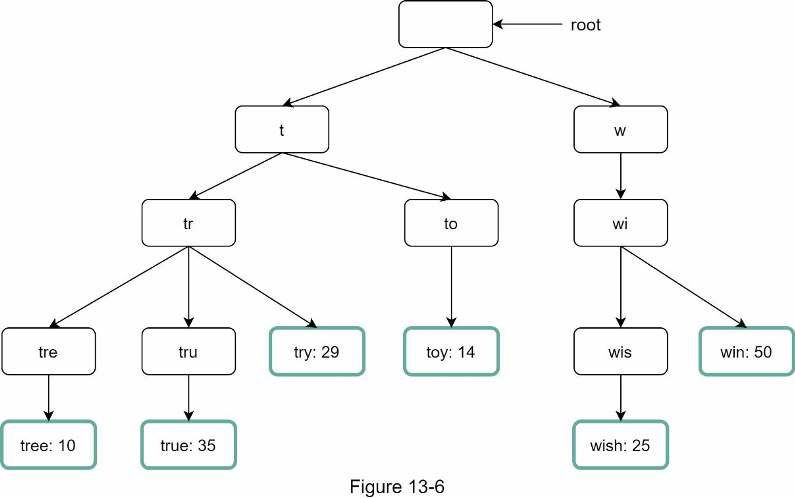
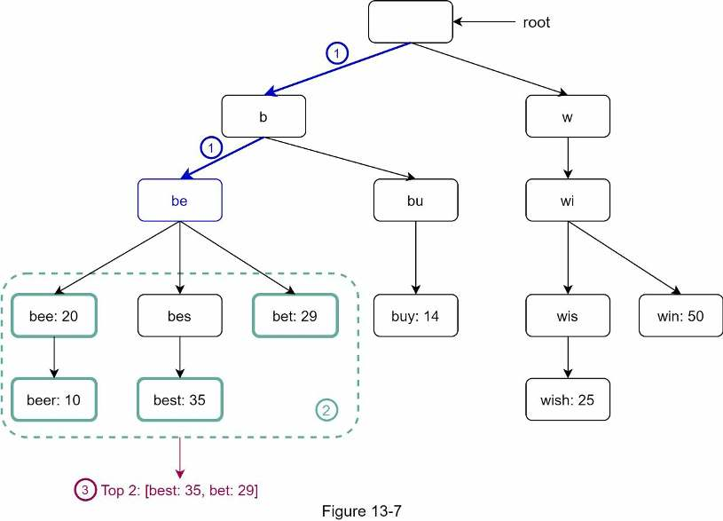
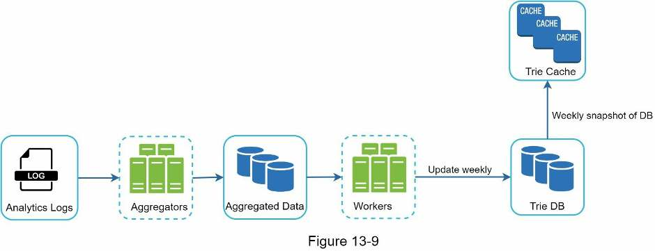
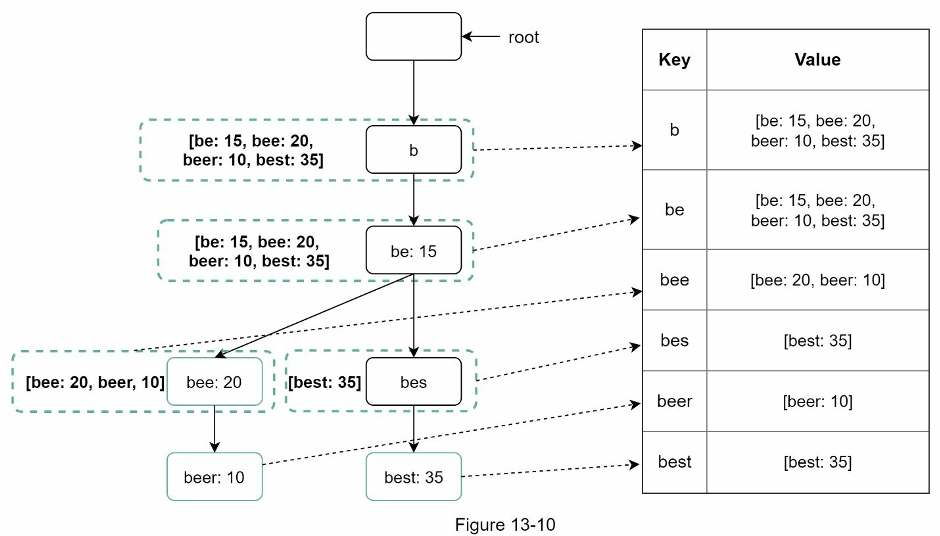
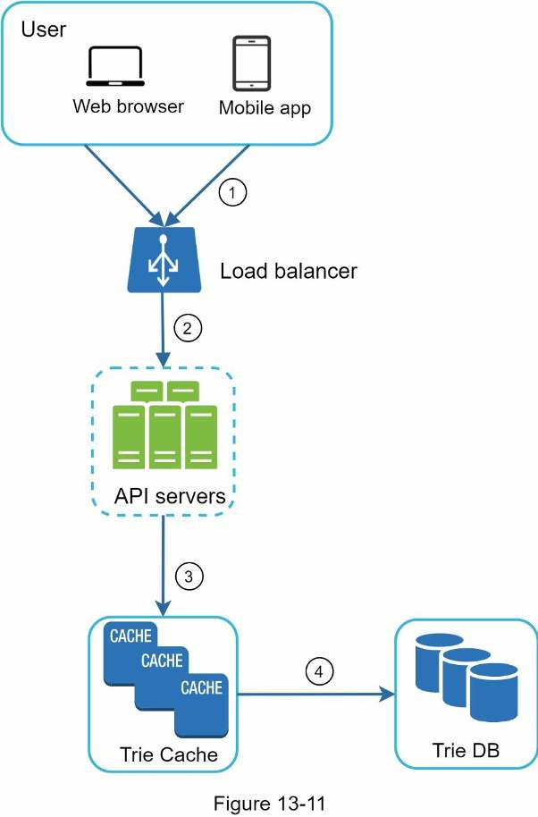
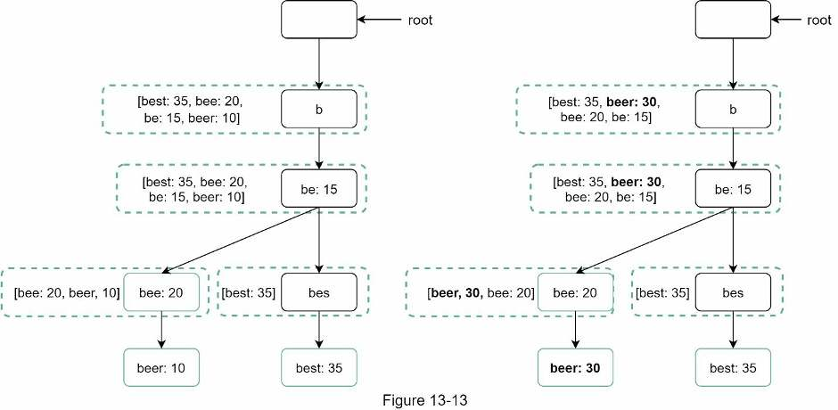
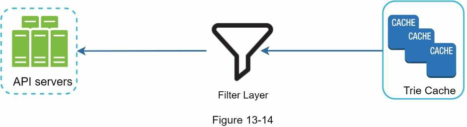
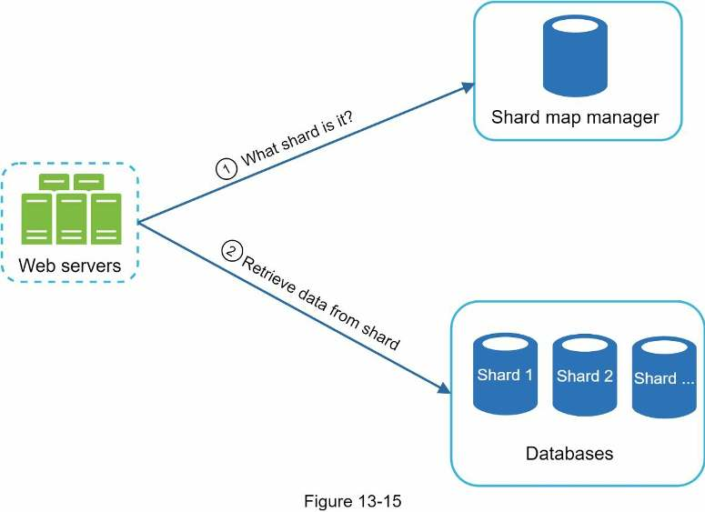

Chapter 13 · Design problem
Design a Search Autocomplete System
How to return the 5 most popular completions for any prefix in under 100 ms: a trie that caches the top queries at every node, rebuilt weekly from aggregated logs, served from a cache, and sharded by prefix.
TL;DR
- Problem: return the top 5 most-searched past queries that start with the typed prefix ("top k"). English, lowercase, no spell check, 10M DAU.
- Requirements: respond in under 100 ms, relevant, sorted by popularity, scalable, highly available.
- Numbers: one request per keystroke (~20 per search) → ~24,000 QPS, ~48,000 peak; 0.4 GB of new data per day.
- Naive version: a frequency table plus
LIKE 'prefix%' ORDER BY frequency DESC LIMIT 5. The database becomes the bottleneck. - Core: a trie with prefix length capped (~50) and the top 5 queries cached at every node. Lookup drops from O(p + c + c log c) to O(1): space traded for time.
- Build offline, weekly: analytics logs → aggregators → aggregated data → workers → Trie DB → Trie Cache.
- Serve: load balancer → API servers → Trie Cache (miss → Trie DB), plus AJAX, browser caching and log sampling.
- Operate: rebuild weekly and swap; hide bad suggestions with a filter layer. Shard by prefix via a shard map manager, since first-letter sharding is uneven.

Interview answer skeleton
If asked this in an interview, walk through these four beats. Each maps to a section below.
- Clarify (≈5 min) Prefix match only? How many suggestions (5)? Ranked how (historical frequency)? Spell check (no)? Language (English, lowercase)? Scale (10M DAU)? State the goals: under 100 ms, relevant, sorted, scalable, highly available. Estimate ~24k QPS, ~48k peak, 0.4 GB/day.
- High level (≈10 min) A data gathering service updates a query → frequency table. A query service runs a top-5 SQL query for the prefix. Say why this won't scale.
- Deep dive (≈20 min) Trie with capped prefix length and top-k cached per node, so lookup is O(1). Weekly pipeline: logs → aggregators → workers → Trie DB → Trie Cache. Query flow plus AJAX, browser cache, sampling. Update by rebuild; delete with a filter layer. Shard by prefix with a shard map manager.
- Wrap up (≈5 min) Unicode tries for other languages, per-country tries on CDNs, trending queries via stream processing.
Step 1Understand the problem and establish design scope
The task is prefix → top 5 popular queries, fast, at 10M DAU.
The feature goes by several names: autocomplete, typeahead, search-as-you-type or incremental search. Interviewers also call it "design top k" or "design top k most searched queries".
| You ask | Interviewer says |
|---|---|
| Is matching only at the beginning of a query, or in the middle too? | Only at the beginning. |
| How many suggestions should the system return? | 5. |
| How does the system know which 5 to return? | By popularity, decided by historical query frequency. |
| Do we support spell check? | No spell check or autocorrect. |
| Are queries in English? | Yes. Multi-language support can come at the end if time allows. |
| Do we allow capital letters and special characters? | No. Assume all queries are lowercase alphabetic characters. |
| How many users? | 10 million DAU. |
Requirements
- Fast response time: suggestions must appear as the user types. Facebook's autocomplete article says results must come back within 100 ms, or the UI stutters.
- Relevant: suggestions relate to the search term.
- Sorted: results are ordered by popularity or another ranking model.
- Scalable: handles high traffic volume.
- Highly available: stays available when part of the system is offline, slows down, or hits unexpected network errors.
Back-of-the-envelope estimation
- 10 million DAU, each doing 10 searches per day.
- 20 bytes per query string: ASCII, so 1 character = 1 byte. A query averages 4 words × 5 characters = 20 characters = 20 bytes.
- 20 requests per search: the client sends a request for every character typed. Typing "dinner" alone sends 6:
search?q=d
search?q=di
search?q=din
search?q=dinn
search?q=dinne
search?q=dinnerQPS = 10,000,000 users × 10 queries/day × 20 characters ÷ (24 h × 3,600 s)
= 2,000,000,000 ÷ 86,400 ≈ 23,150 → book rounds to ~24,000
Peak = QPS × 2 ≈ ~48,000
Storage = 10,000,000 × 10 queries × 20 bytes × 20% new
= 400,000,000 bytes = 0.4 GB of new data per dayStep 2Propose high-level design and get buy-in
Two services: a data gathering service that counts queries and a query service that returns the top 5 for a prefix.
- Data gathering service: gathers user queries and aggregates them in real time. Real-time processing isn't practical for large data sets, but it's a good starting point; the deep dive replaces it.
- Query service: given a search query or prefix, returns the 5 most frequently searched terms.
Data gathering service
Keep a frequency table of query string → count. It starts empty. When users enter "twitch", "twitter", "twitter" and "twillo" in that order, it changes like this (Figure 13-2):
| After query | Frequency table |
|---|---|
| (start) | empty |
| twitch | twitch: 1 |
| twitch: 1, twitter: 1 | |
| twitch: 1, twitter: 2 | |
| twillo | twitch: 1, twitter: 2, twillo: 1 |
Query service
The table has two fields: query (the query string) and frequency (how many times it has been searched).
| Query | Frequency | Shown for "tw"? |
|---|---|---|
| 35 | ✓ 1st | |
| twitch | 29 | ✓ 2nd |
| twilight | 25 | ✓ 3rd |
| twin peak | 21 | ✓ 4th |
| twitch prime | 18 | ✓ 5th |
| twitter search | 14 | ✗ |
| twillo | 10 | ✗ |
| twin peak sf | 8 | ✗ |
Table 13-1 with Figure 13-3: typing "tw" shows twitter, twitch, twilight, twin peak, twitch prime. To get them, run this query (Figure 13-4):
SELECT * FROM frequency_table
WHERE query LIKE 'prefix%'
ORDER BY frequency DESC
LIMIT 5The book's figure puts backticks around prefix%. In SQL a string literal takes single quotes, as shown here.
Step 3Design deep dive
Replace the table with a trie that caches top k per node, build it offline, serve it from a cache, and shard it.
Five areas to cover: the trie data structure, the data gathering service, the query service, trie operations, and scaling the storage.
Trie data structure
Fetching the top 5 from a relational database is inefficient; use a trie (prefix tree) instead. The basic trie is a data-structure question, so cover it briefly and spend your time on the optimizations.
A trie (pronounced "try", from retrieval) stores strings compactly and is built for string retrieval:
- It is a tree-like data structure.
- The root represents the empty string.
- Each node stores a character and has 26 children, one per letter. Empty links aren't drawn.
- Each node represents a single word or a prefix.

To sort by popularity, store each query's frequency in its node. With this frequency table (Table 13-2):
| Query | tree | try | true | toy | wish | win |
|---|---|---|---|---|---|---|
| Frequency | 10 | 29 | 35 | 14 | 25 | 50 |

Getting the top k: the basic algorithm
Let p = length of the prefix, n = total nodes in the trie, c = number of children of a given node.
- Find the prefix node. O(p).
- Traverse its subtree to collect all valid children (nodes that form a real query). O(c).
- Sort the children and take the top k. O(c log c).
Example with k = 2 and the prefix "tr": find node "tr", collect [tree: 10], [true: 35], [try: 29], sort, and return [true: 35, try: 29]. Total cost: O(p) + O(c) + O(c log c).

This is too slow: in the worst case you traverse the entire trie to answer one request. Two optimizations fix it.
Optimization 1 · Limit the max length of a prefix
Users rarely type long queries, so cap p at a small number such as 50. "Find the prefix" drops from O(p) to O(small constant), i.e. O(1).
Optimization 2 · Cache top search queries at each node
Store the top k most frequent queries at every node so you never traverse the subtree. 5 to 10 suggestions are enough for users, so k is small; here only the top 5 are cached. For example, node "be" stores [best: 35, bet: 29, bee: 20, be: 15, beer: 10].
| Step | Basic trie | Optimized trie |
|---|---|---|
| Find the prefix node | O(p) | O(1) (prefix length capped) |
| Collect valid children | O(c) | Not needed |
| Sort and take top k | O(c log c) | O(1) (return the cached list) |
| Total | O(p) + O(c) + O(c log c) | O(1) |
Type a prefix: its path lights up, and the answer is that node's cached list. Search it adds one search for the typed word and recomputes every ancestor's cache. Data: Table 13-2 plus the "b" words of Figure 13-8.
Data gathering service
Updating the trie in real time on every query is not practical:
- Users may enter billions of queries per day. Updating the trie on each one significantly slows down the query service.
- Top suggestions may not change much once the trie is built, so frequent updates are unnecessary.
Freshness needs vary: Twitter needs up-to-date suggestions, while many Google keywords barely change day to day. Either way the trie is built from analytics or logging data, so the pipeline has the same shape.

Analytics logs
Raw data about search queries. Append-only and not indexed. Example (Table 13-3):
| query | time |
|---|---|
| tree | 2019-10-01 22:01:01 |
| try | 2019-10-01 22:01:05 |
| tree | 2019-10-01 22:01:30 |
| toy | 2019-10-01 22:02:22 |
| tree | 2019-10-02 22:02:42 |
| try | 2019-10-03 22:03:03 |
Aggregators
Logs are huge and in the wrong format, so aggregators summarize them. The interval depends on the use case: short intervals for real-time apps like Twitter; once a week is enough for many others. This design assumes the trie is rebuilt weekly.
Aggregated data
Weekly totals per query (Table 13-4). time is the start of the week; frequency is the sum of that query's occurrences in the week.
| query | time | frequency |
|---|---|---|
| tree | 2019-10-01 | 12000 |
| tree | 2019-10-08 | 15000 |
| tree | 2019-10-15 | 9000 |
| toy | 2019-10-01 | 8500 |
| toy | 2019-10-08 | 6256 |
| toy | 2019-10-15 | 8866 |
Workers
A set of servers that run asynchronous jobs at regular intervals. They build the trie and store it in the Trie DB.
Trie Cache
A distributed cache that keeps the trie in memory for fast reads. It takes a weekly snapshot of the Trie DB.
Trie DB
The persistent storage. Two options:
| Option | How the trie is stored | Notes |
|---|---|---|
| Document store | A new trie is built weekly, so periodically take a snapshot, serialize it and store the serialized data. | Document stores like MongoDB are good fits for serialized data. |
| Key-value store | Represent the trie as a hash table: every prefix → a key, and the data on that node → its value. | See Chapter 6 (key-value store) for how these work. |

Query service
Instead of calling the database directly, the improved flow reads from the Trie Cache:

- A search query is sent to the load balancer.
- The load balancer routes the request to API servers.
- API servers get trie data from the Trie Cache and build the autocomplete suggestions for the client.
- If the data isn't in the Trie Cache, it is replenished from the Trie DB, so later requests for the same prefix are served from the cache. A cache miss happens when a cache server is out of memory or offline.
Optimizations for lightning-fast responses
AJAX requests. Web apps fetch suggestions with AJAX, so sending a request and receiving the response doesn't refresh the whole page.
Browser caching. Suggestions rarely change within a short time, so save them in the browser cache and serve repeat requests from there. Google does this. Its response headers when you type "system design interview" (Figure 13-12):
Request URL: https://www.google.com/complete/search?q&cp=0&client=psy-ab&xssi=t&gs_ri=gws-wiz&hl=en&authuser=0&pq=system design interview
Request method: GET
Remote address: [2607:f8b0:4005:807::2004]:443
Status code: 200 OK
Version: HTTP/2.0
Response headers (615 B)
alt-svc: quic=":443"; ma=2592000; v="46...00,h3-Q043=":443"; ma=2592000
cache-control: private, max-age=3600
content-disposition: attachment; filename="f.txt"
content-encoding: br
content-type: application/json; charset=UTF-8
date: Tue, 17 Dec 2019 22:52:01 GMT
expires: Tue, 17 Dec 2019 22:52:01 GMT
server: gws
strict-transport-security: max-age=31536000
trailer: X-Google-GFE-Current-Request-Cost-From-GWS
X-Firefox-Spdy: h2
x-frame-options: SAMEORIGIN
x-xss-protection: 0Read the highlighted line. Google caches results in the browser for an hour: private means the result is for a single user and must not be stored in a shared cache; max-age=3600 means it is valid for 3,600 seconds, i.e. 1 hour.
Data sampling. Logging every query at large scale takes a lot of processing power and storage. Log only 1 out of every N requests.
Trie operations
Create
Workers build the trie from the aggregated data. The source is the analytics log/DB.
Update
| Option | How | When |
|---|---|---|
| 1 · Rebuild weekly | Build a new trie; it replaces the old one. | The default in this design. |
| 2 · Update individual nodes | Change the node, then update every ancestor up to the root, because ancestors store the top queries of their children. | Slow, so avoid it. Acceptable when the trie is small. |

Delete
Hateful, violent, sexually explicit or dangerous suggestions must be removed. Put a filter layer in front of the Trie Cache; it lets you remove results with different filter rules. The unwanted suggestions are also physically removed from the database asynchronously, so the next build cycle uses the correct data set.

Scale the storage
When the trie grows too large for one server, shard it. Since only English is supported, the naive way is to shard by first character:
| Servers | Split |
|---|---|
| 2 | 'a'–'m' and 'n'–'z' |
| 3 | 'a'–'i', 'j'–'r' and 's'–'z' |
| Up to 26 | One letter per server (first-level sharding) |
| More than 26 | Shard on the second or third character. Queries starting with 'a' could go to 4 servers: 'aa'–'ag', 'ah'–'an', 'ao'–'au', 'av'–'az'. |
To fix the imbalance, analyze the historical distribution and shard smarter. A shard map manager keeps a lookup database of where rows are stored. If 's' gets about as many historical queries as 'u' through 'z' combined, use two shards: one for 's' and one for 'u'–'z'.

Step 4Wrap up
Expect follow-ups on languages, countries and trending queries.
- "How do you support multiple languages?" Store Unicode characters in trie nodes. Unicode is "an encoding standard [that] covers all the characters for all the writing systems of the world, modern and ancient".
- "What if top queries differ by country?" Build different tries for different countries, and store them in CDNs to improve response time.
- "How do you support trending (real-time) queries?" When news breaks and a query suddenly becomes popular, the design fails: the offline workers only run weekly, and even if scheduled, building the trie takes too long. Real-time autocomplete is beyond the book's scope, but some ideas:
- Reduce the working data set by sharding.
- Change the ranking model to give more weight to recent queries.
- Data may arrive as streams (generated continuously), so you don't have it all at once. That needs different systems: Apache Hadoop MapReduce, Apache Spark Streaming, Apache Storm, Apache Kafka. Strictly, Hadoop MapReduce is a batch framework; Spark Streaming and Storm are the stream processors, and Kafka is the event log that typically feeds them.
Self-test
What are the five requirements, and what is the latency target?
Fast response (within 100 ms, per Facebook's typeahead article, or it stutters), relevant, sorted by popularity, scalable, and highly available.
Walk through the QPS and storage estimates.
10M DAU × 10 searches × 20 requests (one per character) ÷ 86,400 s ≈ ~24,000 QPS; peak ×2 ≈ ~48,000. Storage: 10M × 10 × 20 bytes × 20% new = 0.4 GB/day.
Why are there about 20 requests per search query?
The client requests suggestions on every character typed, and an average query is 4 words × 5 characters = 20 characters.
What does the high-level query service run, and why doesn't it scale?
SELECT * FROM frequency_table WHERE query LIKE 'prefix%' ORDER BY frequency DESC LIMIT 5. On a large data set, database access becomes the bottleneck.
What are the steps and time complexity of the basic trie top-k algorithm?
Find the prefix node O(p), traverse its subtree for valid children O(c), sort and take top k O(c log c). Total O(p) + O(c) + O(c log c); the worst case traverses the whole trie.
Which two optimizations make lookup O(1), and what do they cost?
Cap the prefix length (e.g. 50), making find O(1), and cache the top k (5) queries at every node, making retrieval O(1). The cost is a lot of extra space, which is worth it for fast responses.
Why not update the trie in real time on every query?
Billions of queries a day would significantly slow down the query service, and top suggestions don't change much once the trie is built.
Name the components of the data gathering pipeline, in order.
Analytics logs → aggregators → aggregated data → workers → Trie DB → Trie Cache (weekly snapshot of the DB).
What are the two options for storing the trie in the Trie DB?
A document store (e.g. MongoDB) holding a serialized weekly snapshot, or a key-value store where every prefix is a key and that node's data is the value.
Describe the query service flow, including a cache miss.
Load balancer → API servers → Trie Cache, which builds the suggestions. On a miss (cache server out of memory or offline), data is replenished from the Trie DB so later requests for that prefix hit the cache.
What do cache-control: private, max-age=3600 mean for autocomplete results?
private: for a single user only, not to be stored in a shared cache. max-age=3600: valid for 3,600 seconds (1 hour) in the browser cache.
Why is updating a single trie node expensive, and what's the preferred update method?
Every ancestor up to the root caches its descendants' top queries, so all of them must be updated too. Prefer rebuilding the trie weekly and replacing the old one.
How do you remove harmful suggestions?
A filter layer in front of the Trie Cache removes them using configurable rules, and they are physically deleted from the database asynchronously so the next build excludes them.
What's wrong with sharding by first character, and how do you fix it?
Distribution is uneven (far more words start with 'c' than 'x'). Use historical data to balance shards (e.g. 's' alone vs 'u'–'z' together) and a shard map manager to look up which shard holds a prefix.
Why does the design fail for trending queries, and what helps?
Workers rebuild only weekly and building takes too long. Ideas: shard to shrink the working set, weight recent queries more in ranking, and use stream processing (Spark Streaming, Storm, Kafka).
Terms to know
- Autocomplete
- Suggesting completions as the user types. Also called typeahead, search-as-you-type or incremental search.
- Trie
- Prefix tree: each node is a character, each path from the root spells a prefix. Pronounced "try", from retrieval.
- Top k
- The k most frequent queries for a prefix (k = 5 here).
- Frequency table
- Query string → how many times it was searched.
- Aggregator
- A job that turns raw, unindexed logs into per-query counts over an interval (weekly here).
- Trie Cache
- Distributed in-memory copy of the trie, refreshed from a weekly snapshot of the Trie DB.
- AJAX
- Fetching data in the background without reloading the whole page.
- Cache-Control
- HTTP header telling caches who may store a response (
private) and for how long (max-age). - Data sampling
- Logging only 1 in N requests to save processing and storage.
- Shard map manager
- A lookup service/database that says which shard holds a given key or prefix.
- Stream processing
- Processing data continuously as it arrives, instead of in periodic batches.